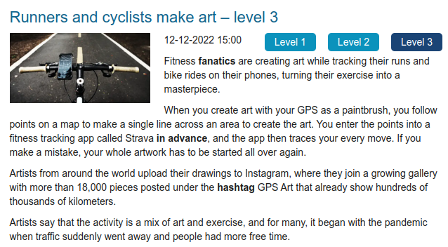
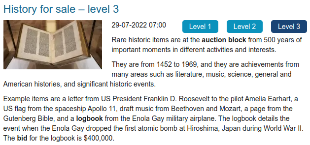
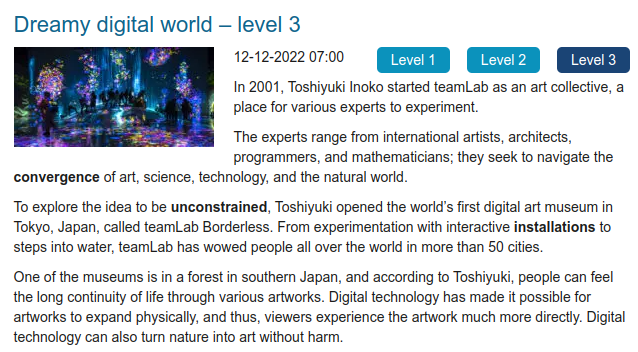

✅ [A1] – Avaliação do Módulo 1 - Desvendando a língua inglesa pela leitura
Iniciado em domingo, 20 ago 2023, 12:10
Estado Finalizada
Concluída em domingo, 20 ago 2023, 13:07
Tempo empregado 56 minutos 27 segundos
Avaliar 9,00 de um máximo de 10,00(90%)
Questão 1
De acordo com Ferro (2012, p. 152):
“[...] ler um texto em língua estrangeira é um trabalho de .......... , não de .......... . Portanto, quanto menor for o uso do(a) .......... e maior o uso do (a) .......... , mais sucesso você terá.”
“[...] ler um texto em língua estrangeira é um trabalho de COMPREENSÃO , não de DECIFRAÇÃO. Portanto, quanto menor for o uso do(a) DICIONÁRIO e maior o uso do (a) DEDUÇÃO , mais sucesso você terá.”
Questão 2
Leia a notícia abaixo, utilizando as estratégias de leitura que estamos estudando, e marque a alternativa correta:

(Fonte: >>)
Do que trata o texto?
a. De um aplicativo que fotografa os lugares por onde corredores e ciclistas passam
b. De um exposição de quadros feita por artistas que são corredores e ciclistas
c. De um aplicativo de fitness que funciona como GPS que corredores e ciclistas estão usando para fazer desenhos, seguindo os pontos de um itinerário pré-estabelecido
d. Do lançamento de uma bicicleta que vem com celular acoplado
c. De um aplicativo de fitness que funciona como GPS que corredores e ciclistas estão usando para fazer desenhos, seguindo os pontos de um itinerário pré-estabelecido
Questão 3
No vídeo “Compreensão escrita: skimming”, vemos que devemos usar o skimming quando queremos:
a. Todas as alternativas estão corretas
b. Ter uma ideia geral do assunto tratado no texto
c. Revisar, rapidamente, um texto já lido
d. Ler rapidamente um texto que não requer atenção detalhada
d. Ler rapidamente um texto que não requer atenção detalhada ❌
Questão 4
Leia a notícia abaixo, utilizando as estratégias de leitura que estamos estudando, e marque a alternativa correta:

(Fonte: )
Alguns dos itens que vão a leilão são uma .......... do Presidente Roosevelt para Amelia Earhart, uma bandeira da nave espacial .......... , rascunhos de música de Beethoven e .......... , uma .......... da Bíblia de Gutenberg e um diário de bordo do avião militar .......... .
Alguns dos itens que vão a leilão são uma CARTA do Presidente Roosevelt para Amelia Earhart, uma bandeira da nave espacial APOLLO 11, rascunhos de música de Beethoven e MOZART, uma PÁGINA da Bíblia de Gutenberg e um diário de bordo do avião militar ENOLA GAY .
Questão 5
No vídeo “Compreensão escrita: skimming”, ao tratar especificamente de como fazer skimming de um texto, a professora sugere, entre outras coisas, ler o título e o subtítulo do texto, bem como o primeiro e o último parágrafos e a primeira e a última sentenças de cada parágrafo.
Escolha uma opção:
Verdadeiro
Falso
Verdadeiro
Questão 6
Para Lapkoski (2012, p. 79), a estratégia de:
.......... “consiste em passar rapidamente os olhos pelo texto com a finalidade de determinar o significado geral do que estamos lendo”, enquanto a de .......... tem como finalidade “localizar informações específicas, ou saber se um texto é apropriado para os propósitos que temos em mente”.
SKIMMING “consiste em passar rapidamente os olhos pelo texto com a finalidade de determinar o significado geral do que estamos lendo”, enquanto a de SCANNING tem como finalidade “localizar informações específicas, ou saber se um texto é apropriado para os propósitos que temos em mente”.
Questão 7
Leia a notícia abaixo, utilizando as estratégias de leitura que estamos estudando, e responda se o enunciado em seguida é verdadeira ou falso:

(Fonte: >>)
O nome do primeiro museu de arte digital do mundo é teamLab Borderless, que fica em Tóquio, no Japão.
Verdadeiro
Questão 8
No skimming, a leitura é feita com toda atenção, observando-se todos os detalhes e tentando reter o máximo de informações possível.
Escolha uma opção:
Verdadeiro
Falso
Falso
Questão 9
Relacione os tipos de leitura mencionados por Ferro (2012, p. 59):
Leitura objetiva ..........
Leitura superficial ..........
Leitura detalhista ..........
Leitura objetiva Scanning.
Leitura superficial Skimming.
Leitura detalhista Thorough.
Questão 10
Leia a notícia abaixo, utilizando as estratégias de leitura que estamos estudando, e marque a alternativa correta:
(Fonte: )
De acordo com o texto, esta mistura de arte e exercício, para muitos, começou quando?
a. Quando foi criada a hashtag GPS Art
b. Durante a pandemia, com menos carros na rua
c. Quando artistas do mundo todo começaram a postar seus desenhos no Instagram
d. Quando o aplicativo Strava mostrou um erro e os itinerários tiveram que ser reiniciados
b. Durante a pandemia, com menos carros na rua